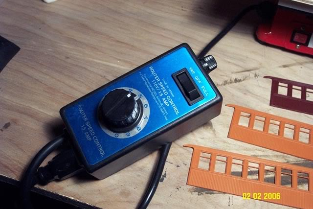
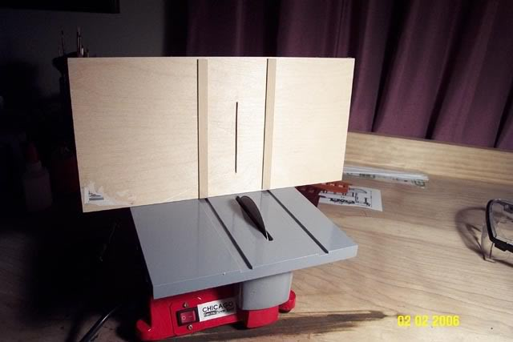
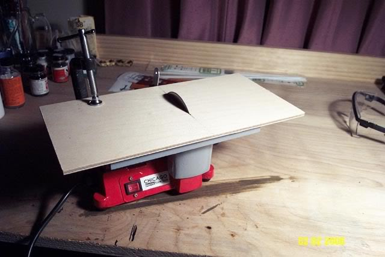
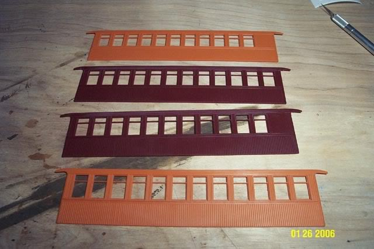
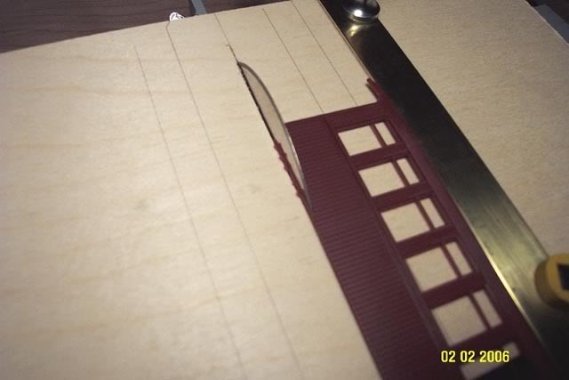
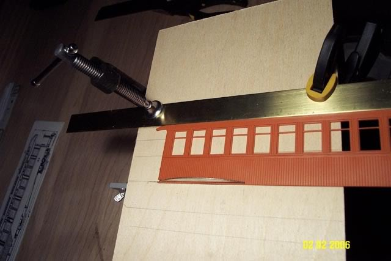
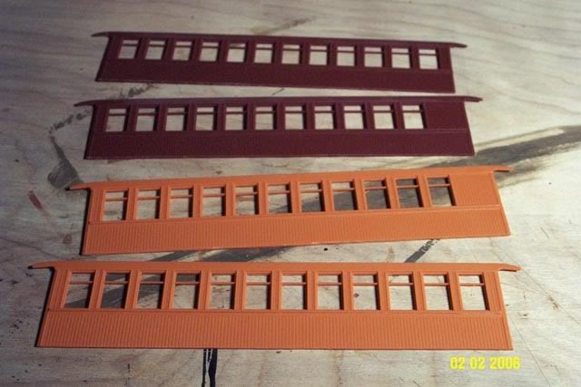

Kitbashing a Sandy River
& Rangeley Lakes
On2 scale coach from two
Bachmann
On30 coaches.
Page 2. cutting underway.
Kitbashing a Sandy River
& Rangeley Lakes
On2 scale coach from two
Bachmann
On30 coaches.
Page 2. cutting underway.
| Update,
February 3, 2006
This
project required a new tool!
Got
the speed controller to slow it down.
 The saw does lose some torque at slow speeds..but for cutting plastic, a speed of "5" is fast enough to cut the plastic without bogging down the blade, but slow enough that the plastic doesnt melt.. I made
a new table from a sheet of 1/4" thick model airplane plywood..
  about
the blade..
So
I went home, dejected, and tried out that smooth "Dry Diamond Blade" that
came with the saw..it works great!! I used
some straight edges, laid them against the blade, and drew some lines on
the table for reference.
and
its time to try it out!!  first
cut..I need to slice one 1mm from the bottom of all four coach sides..safety
glasses on, line up the fence, and slice!
  the
saw leaves behind some plastic flash..that easily snaps off..
the pieces so far, with 1mm off the bottom:  next
step, cutting off the tops of the coach sides, right through the middle
of the top windows..
|